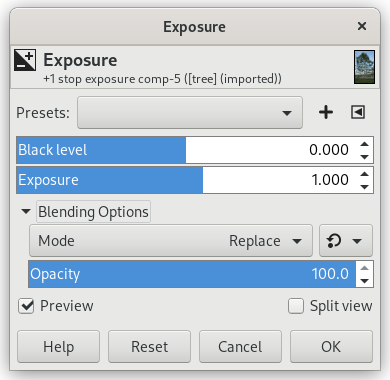
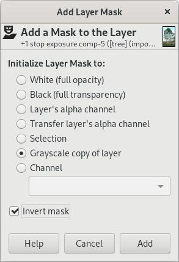
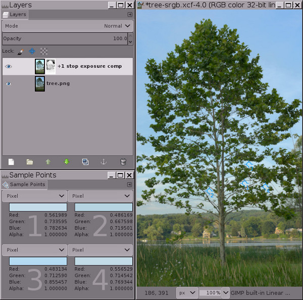

Figure 2

Using high bit depth GIMP’s Exposure operation to lighten the ground by one stop without blowing out portions of the sky.
-
Left: The original image, an interpolated camera raw file that was deliberately underexposed in camera to avoid blowing out the sky. It might not appear to be the case, but this image is already very close to having out of gamut RGB channel values in the sky, and a simple Auto Stretch Contrast won’t lighten the image at all.
-
Right: The same image after using high bit depth GIMP’s Exposure operation at 32-bit floating point linear precision to add one stop of positive exposure compensation. An inverse grayscale mask was used to keep the highlights from blowing out.
This step-by-step example provides a sample image and is broken down into five steps, starting with downloading the image. Steps 3, 4, and 5 describe the actual procedure.
-
Download tree.png, which is a 16-bit integer sRGB image. High bit depth GIMP really is an “sRGB only” image editor, so it’s best if you don’t even try to edit in other RGB working spaces.
-
Open tree.png with GIMP and assign the GIMP built-in sRGB profile (the image colors won’t change a bit). Then convert the image to 32-bit floating point linear precision: Select → → , and in the Encoding Conversion dialog, select Linear light (this ensures that the Normal blend mode produces radiometrically correct results).
-
Make a copy of the “tree.png” layer via → or → , and label it “+1 stop exposure comp”. Then use → to add one stop of positive exposure compensation. Figure 3 below shows the proper settings for the Exposure operation dialog, and Figure 4 shows the result:
Figure 3

Using the Exposure operation to add one stop of positive exposure compensation.
When using the Exposure operation to add one stop of positive exposure compensation, make sure the image really is at floating point precision, because integer precision will clip the highlights.
Figure 4

At floating point precision, GIMP’s Exposure operation is unbounded. This means you can use the Exposure operation to add positive exposure compensation without blowing out the highlights.
Notice the RGB channel values for the four sample points: the channel information that would have been clipped using integer precision is encoded using channel values that are greater than 1.0 floating point.
The image in Figure 4 clearly has “blown” highlights in the sky. But the highlights aren’t really blown (that is, clipped to 1.0 in one or more channels). Instead the highlight information is still there, but the RGB channel values fall outside the RGB display channel value range of 0.0f to 1.0f. The sample points dialog in Figure 4 above shows four sample points that have RGB channel values that are greater than 1.0. As shown in Figure 5 below, adding a mask allows you to recover these highlights by bringing them back down into the display range.
If you had used integer precision instead of floating point, the highlights really would be blown: The sample points would have a maximum channel values of 255, 65535 or 4294967295, depending on the bit depth. And masking would only “recover” a solid expanse of gray, completely lacking any details (try for yourself and see what happens).
-
Add an inverse grayscale layer mask: Right-click on the layer and select → → , and when the Add Layer Mask dialog pops up, choose Grayscale copy of layer and check the Invert mask box.

As shown in Figure 5 below, at this point the highlights will be brought back into the display range, meaning all RGB channel values are between 0.0f and 1.0f. But the image will probably look a little odd (sort of cloudy and flat), and depending on the image, the brightest highlights might actually have dark splotches—don’t worry! this is temporary.
Figure 5

Result of adding an inverse grayscale layer mask to bring the highlights back into the display range.
Adding an inverse grayscale layer mask brings the highlights back into the display range, but at this point most images will look flat and cloudy, and some images will have dark splotches in the highlights. The next step—“Auto Stretch Contrast” performed on the mask—will take care of this problem.
-
Click on the layer mask to select it for editing, and then select → → :

“Keep Colors” should be checked (though it doesn’t really matter on grayscale images such as layer masks).
Figure 6 below shows the final result:

Doing → → on the layer mask removes the “cloudy” appearance, leaving a nicely brightened image with intact highlights.
→ → on the mask is necessary because just like the image layer has out of gamut RGB channel values, the inverted grayscale mask contains out of gamut grayscale values. → → brings all the mask grayscale values back into the display range, allowing the mask to proportionately compensate for the layer’s otherwise out-of-gamut RGB channel values, masking more in the layer highlights and less/not at all in the image’s shadows and midtones.
Notice that one of the sample points still has a blue RGB channel value that is slightly out of gamut. The easiest way to deal with this is to use → and drag the middle slider triangle to make a Gamma adjustment of 0.45 on the mask, not on the actual image layer. You can make this Gamma adjustment either on the entire mask (works well, less effort). Or else you can make the adjustment just on the mask shadows (which correspond to the layer highlights), in which case you’d load the mask as a selection, invert the selection, and make the Gamma adjustment. Or if the remaining out of gamut channel values are only very slightly out of gamut, make a “New from Visible” layer and then → → the result to bring the remaining channel values back into gamut.
That’s the whole procedure for using the Exposure operation to add a stop of positive exposure compensation to the shadows without blowing out the highlights. Now you can either fine-tune the mask, or else just make a “New from Visible” layer and continue editing your nicely brightened image. Depending on the image and also on your artistic intentions for the image, the mask might not need fine-tuning. But very often you’ll want to modify the resulting tonal distribution by doing a gamma correction, or perhaps a Curves operation on the mask, or else by painting directly on the mask. And sometimes you’ll want to blur the mask to restore micro contrast.